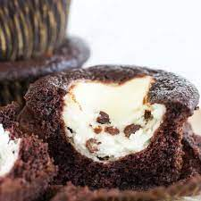

Black Bottom Cupcakes

Black Bottom Cupcakes
Ingredients
- 8 oz. cream cheese
- 1 egg
- 1/3 cup white sugar
- 1/8 tsp salt
- 1 cup miniature semisweet chocolate chips
- 1 1/2 cups all purpose flour
- 1 cup white sugar
- 1/4 cup unsweetened cocoa powder
- 1 tsp baking soda
- 1/2 tsp salt
- 1 cup water
- 1/3 cup vegetable oil
- 1 TBSP cider vinegar
- 1 tsp vanilla extract
Steps
- Preheat oven to 350 degrees F (175 degrees C). Line muffin tins with paper cups or lightly spray with non-stick cooking spray.
- In a medium bowl, beat the cream cheese, egg, 1/3 cup sugar and 1/8 teaspoon salt until light and fluffy. Stir in the chocolate chips and set aside.
- In a large bowl, mix together the flour, 1 cup sugar, cocoa, baking soda and 1/2 teaspoon salt. Make a well in the center and add the water, oil, vinegar and vanilla. Stir together until well blended. Fill muffin tins 1/3 full with the batter and top with a dollop of the cream cheese mixture.
- Bake in preheated oven for 25 to 30 minutes.